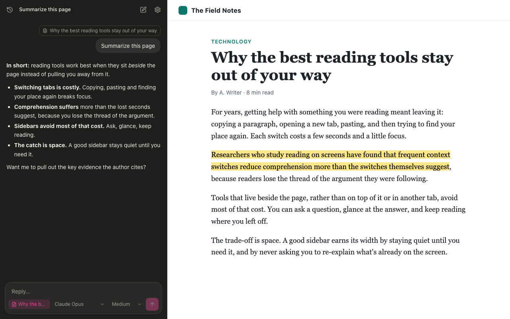

Chat with Claude, Gemini, ChatGPT or local models next to any web page, using the accounts you already have. No API keys.

AI Sidebar runs on desktop computers. Open this page on your Mac, Windows or Linux computer to install it.
A small, free app that lets the sidebar use your AI accounts. It starts by itself when you sign in to your computer.
irm https://raw.githubusercontent.com/Juan337492/aisidebar/main/install.ps1 | iexcurl -fsSL https://raw.githubusercontent.com/Juan337492/aisidebar/main/install.sh | bashPaste this into a terminal:
curl -fsSL https://raw.githubusercontent.com/Juan337492/aisidebar/main/install.sh | bashNeeds Node.js 20 or newer. It sets up a systemd user service, or a desktop startup entry.
You also need at least one AI tool. The installer tells you which ones are missing:
One click, and it updates by itself.
Add to FirefoxFirefox asks for permission. Click Continue to Installation, then Add.
Until the permanent Firefox version is ready, Firefox keeps it until you restart the browser.
Download for Firefoxabout:debugging#/runtime/this-firefoxOutside the web store, your browser asks you to load extensions yourself. It takes a minute, and you only do it once.
Download the extensionchrome://extensionsIf the browser later warns about developer-mode extensions, click Keep. That warning appears for every extension installed this way.
That's it. Try Use page to ask about the page you're on, the camera button to ask about what's on screen, or right-click any text → Explain.
It may be later. For now it's shared directly so you can install it today. The download comes straight from the project's public GitHub page.
Everything is open source. The extension reads a page only when you click Use page, the camera button or the right-click menu. Your messages go to the AI you choose, through the helper app on your own computer. Nothing goes to the developer, and there's no tracking. AI Sidebar never sees your passwords: you sign in on Anthropic's, Google's or OpenAI's own page.
AI Sidebar is free. It uses the AI plan you already have (Claude Pro or Max, a Google account for Gemini, or ChatGPT Plus or Pro). Ollama runs free models on your own computer.
When a new version is out, the sidebar shows Update companion for the helper app (one click), plus a link to the new extension. To update the extension, download the new zip, replace the old folder's contents, and click the reload arrow on the extensions page.
Remove the extension from your browser's extensions page. To remove the helper app, run aisidebar-companion uninstall in PowerShellTerminal.
Check the full setup guide, or open an issue and describe what you saw.